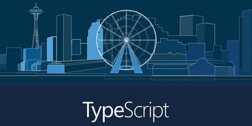

What is TypeScript?
 Lex-tp
Lex-tpContent
◆ What is TypeScript?
◆ What is object-oriented programming in TypeScript?
◆ What is common in TypeScript and JavaScript?
◆ TypeScript Features.
◆ History of TypeScript.
◆ IDE and editor support.
◆ Conclusion.
What is TypeScript?
TypeScript is a programming language which was developed by Microsoft. It is free, open source and superset of the JavaScript.
What is TypeScript?
Maintained by Microsoft, the language comes with an addition of class-based object oriented programming, as well as optional static typing to the JavaScript.
What is object-oriented programming?
☟
What is object-oriented programming?
Object Oriented Programming is a programming paradigm that uses abstractions to create models based on real-world objects. OOP uses several techniques from previously recognized paradigms, including:
- modularity;
- polymorphism;
- encapsulation.
What is common in TypeScript and JavaScript?
Using TypeScript is possible to create JavaScript applications for the client or server side.
What is common in TypeScript and JavaScript?
TypeScript has been created to tackle the development of large programs.
Being a superset of the JavaScript, it can be transcompiled to the latter and all JavaScript programs can be considered as TypeScript programs.
How does JavaScript understand TypeScript features?
There is a JavaScript engine that reads and executes your code.
But JavaScript engines are not able to read TypeScript code so any TypeScript file should go under a "pre-translation" process, called compilation.
Only after the first compilation step you're left with pure JavaScript code.
What is the meaning of TypeScript?
Firstly, it should be noted that TypeScript is a strongly typed and compiled language, which will probably be closer to Java, C#, and other strongly typed languages.
Strict typing at run time reduces the number of potential errors that might occur when developing in JavaScript.
History of TypeScript.
TypeScript was first made public in October 2012, after two years of internal development at Microsoft.
TypeScript 0.9, released in 2013, added support for generics.
TypeScript 1.0 was released at Microsoft's Build developer conference in 2014.
History of TypeScript.
In July 2014, the development team announced a new TypeScript compiler, claiming 5 times performance gains. Simultaneously, the source code, which was initially hosted on CodePlex, was moved to GitHub.
History of TypeScript.
On 22 September 2016, TypeScript 2.0 was released.
TypeScript 3.0 was released on 30 July 2018.
ECMAScript 2015 support.
TypeScript adds support for features such as classes, modules, and an arrow function syntax as defined in the ECMAScript 2015 standard.
TypeScript features.
Additional TypeScript features include:◆ Type annotations and compile-time type checking;
◆ Type inference;
◆ Type erasure;
◆ Interfaces;
◆ Enumerated types;
◆ Generics;
◆ Namespaces;
◆ Tuples;
◆ Async/await.
TypeScript features.
The following features are backported from ECMAScript 2015:◆ Classes;
◆ Modules;
◆ Abbreviated "arrow" syntax for anonymous functions;
◆ Optional parameters and default parameters.
IDE and editor support.
Today there is support TypeScript in more IDEs, particularly in Eclipse, via a plugin contributed by Palantir Technologies. Various text editors, including Emacs, Vim, Webstorm, Atom and Microsoft's own Visual Studio Code also support TypeScript.

Conclusion.
TypeScript is more than justified in large projects.
This is due to the fact that the development on it takes longer than on JavaScript, due to the fact that instead of methods and classes it is necessary to describe their declarations.
Nevertheless, as long as there is no static typing in JavaScript, TypeScript is a great alternative.